Understanding Variables
and Data Types
In this particular course, we are going to explore what are Variables, how to name them, how do variables work, what is print function, what are common data types that we should know, what are the difference between type() & isinstance(). So, if you are ready you can click Get Start button or scroll, GOOD LUCK!
Naming and Declaring the Variables
How do you declare variables and what are naming conventions to name variables?
In Python, variables are like a labelled box for storing and referencing data of different types. To declare variables in Python, you assign a value to an identifier with the assignment (=) operator. You don't need to use special keywords like let or const in JavaScript, or in C#.
In Python, you just write the name of the variable on the left, followed by the assignment operator, and the value you want to assign on the right. Here's an example of how to declare name and age variables:
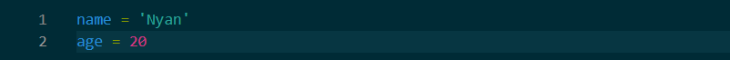
In the example above, the variable name holds the value 'Nyan'.
This is a string, which is a series of characters used to represent text.
Strings are written with single or double quotes, for example 'Hello' or "Hello".
In future lessons, you'll learn more about working with strings in Python.
When naming variables in Python, there are some important rules you should keep in mind:
If you break any of those rules, your Python program will throw SyntaxError:
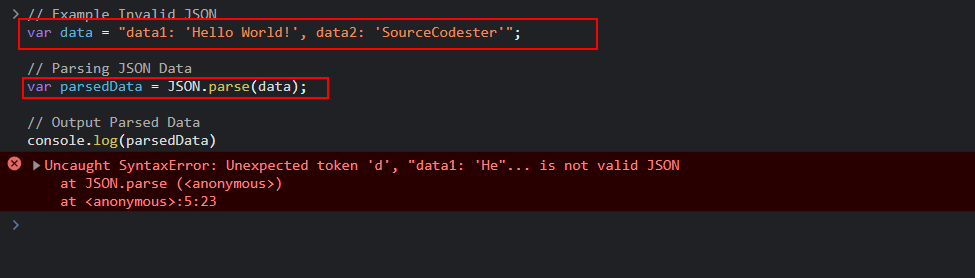
Now let's go over some common naming convections for variables in Python.
First, variable names should be in lowercase, with separate words separated by an underscore.
This is called snake case:
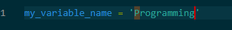
Next, you should use descriptive names for variables. For example, if you want to save a user’s age as a variable, user_age is better than age or an abbreviation like ua.
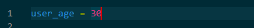
This way, you can easily communicate the purpose of a variable to other team members (or to your future self) in a large codebase.
Another convention is to avoid using single-letter variable names. This is very common in Python, but should be avoided because variable names with a single letter communicate no purpose or meaning:
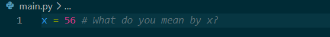
The pound symbol ( # ) and the text that follows in the example above is called a comment. You might already be familiar with comments, so let's go over them quickly and explain how they work.
In Python, comments start with a pound symbol ( # ), and the language ignores everything the # symbol on that like:
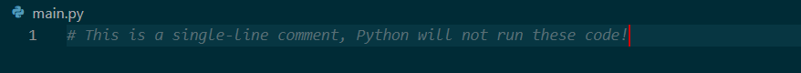
Multi-line commetns can be created by using consecutive single-line comments:
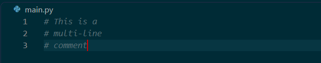
You can use comments to explain your code, leave reminders for yourself, or clarify why a line exists. Comments are especially helpful when you're learning or working in teams.
However, you shouldn't use comments to explain what your variable names mean. Instead the names you choose for your variables should be descriptive and communicate what they're for, and follow the other naming rules mentioned earlier to prevent syntax errors.
Now, to be able to continue to section 02, I would like you to take a quiz in here. I would be very appreciate for this, Thanks.
Quiz
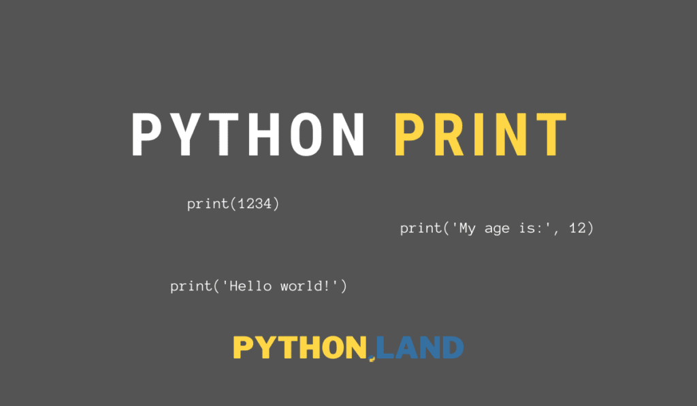
Print Function
How does the Print Function work?
Every programming language has some way to output data to the terminal with a built-in method, function, property, or keyword.
In Python, you can use the print function to print data to the terminal.
(a text-based window where you talk directly to your computer using typed commands instead of clicking on icons.)
Let's take a closer look at the print functions so you can start using it with the confidence.
One of the first things you do when you're learning any programming language is to write a simple Hello world! Program.
You can do that easily in Python with just the print function.
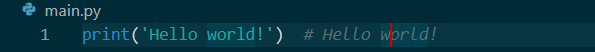
You will learn more about strings and functions in Python in future lessons.
For now, just consider strings as a sequence of characters surrounded by either single ( ' ) or double ( " ) quotation marks.
In the print('Hello world!') example, the string 'Hello world!' is an argument passed to the print function.
You can also use the print functions to show multiple values, or arguments, at once by separating them with commas.
For example:
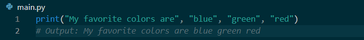
Python automatically adds a space between each item when you separate them with commas. This is helpful when you want to print several pieces or words of information together.
Quiz
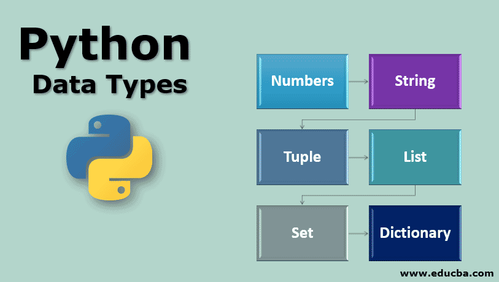
Data Types
What are Common Data Types in Python?
Before working with Python variables, it’s important to understand data types.
A data type describes the kind of value a variable holds.
For example, a number, a piece of text, or a list of items.
Programming languages use data types so they know how to store and work with different kinds of information.
Python is a dynamically-typed language like JavaScript, meaning you don’t need to clearly declare types for variables.
The language knows what data type a variable is based on what you assign to it.
Here are some examples:
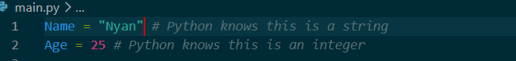
This is in contrast to some statically-typed languages like C#, Java, and C++, where you have to declare types with variables, like this:
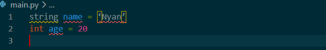
The dynamic-typing nature of Python makes coding really fast and more flexible, but it can lead to unexpected bugs because type errors are detected only when a program runs, not when the program compiles.
Since Python determines data types while your program is running, typerelated mistakes are only discovered at that movement. When a program runs, Python executes your code line by line. If it reaches a line where a certain object is expected to behave in a way it’t not able to, Python will stop and show error.
In contrast, some languages compile your program before it runs. Compiling means the computer checks your code in advance and prepares it to run. During this step, those languages can catch type errors before the program even starts.
You don’t need to know those languages yet. The important idae is simply:
Because of this, you might not learn about a type mistake in Python until the program reaches that specific line of code while running. Here are the most common data types you'll use in Python:
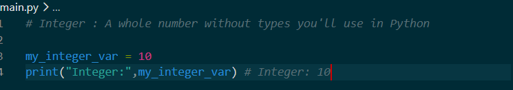
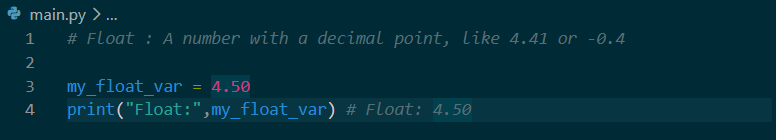
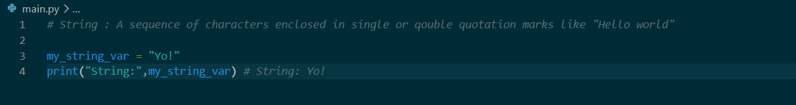
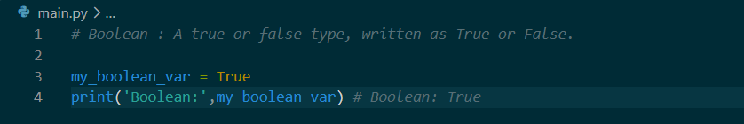
Set
Set data type is like a bag of unique items. It automatically removes any duplicates. The order inside a set does not matter.
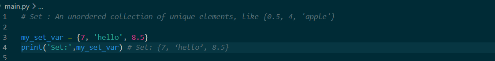
Here is an example that it ignores about the duplicate numbers:
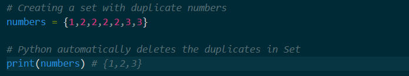
Dictionary
Dictionary is like a real-world phonebook. It pairs a Key(a name) with a Value(a phone number or detail) so you can look things up instantly.
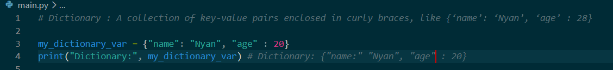
Here is an example of how dictionary data type work:

Tuple
A tuple is like a locked list. Once you create it, you cannot change it, add items, or delete items. It is permanent.
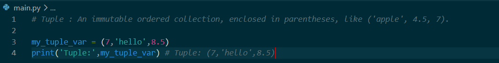
Here is an example of how tuple data type work:
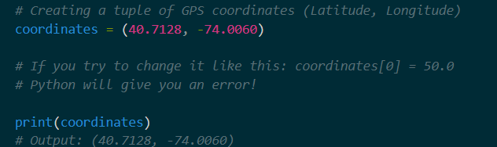
Range
A range is a number generator. Instead of writing out a long list of numbers and wasting memory, a range generates them on the spot when you need them.
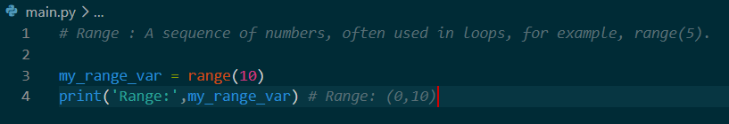
Here is an example of how range data type work:
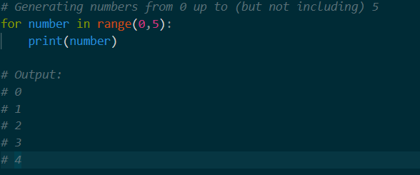
List
A list is like a shopping list. You can add items, remove items, and change the order. Items can also repeat.
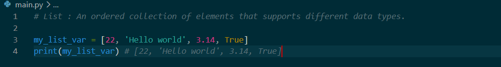
Here is an example of how list data type work:
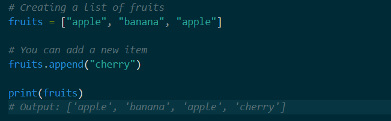
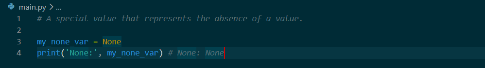
In future lessons, you will learn more about how to work with all of these data types.
Quiz
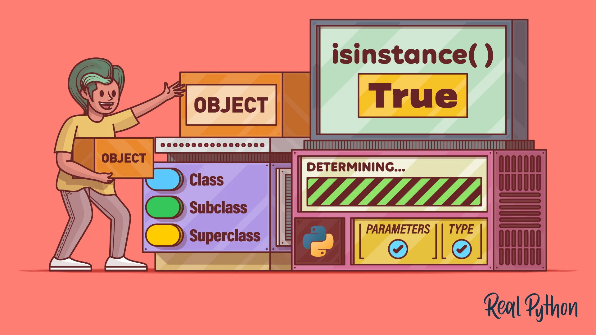
Functions
How do the type()isinstance() Functions Work?
In the prior lesson, you learned about common data types in Python including the string, integer, and float types.
As you build out your programs, you will need to learn how to view the type for a variable.
Here is an example variable:
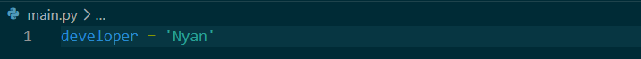
To see what type developer is, you can use the type( ) function like this:
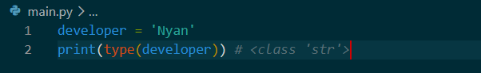
The output of that means developer is a string type.
If you fall to provide any arguments to the type( ) function, then you will receive the following error message.
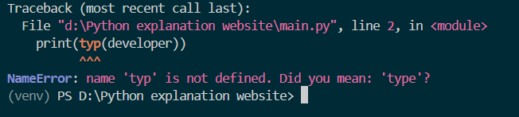
There will be times in your program where you will need to verify that a praticular variable is a specific type before performing operations on it.
This is where the isinstance( ) function comes in.
Here is an example variable with a string assigned to it:
account_balance = '12'
If you try to do mathematical expressions like division using the account_balance variable, then you will receive an error message like this.
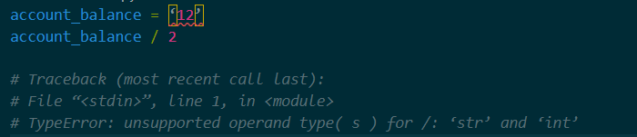
To see if account_balance is an integer, you can check using isinstance( ) function like this:
account_balance = '12'
isinstance(account_balance,int) # Flase
The built-in isinstance( ) functions lets you check if a variable matches a specific data type. It takes in an object and the type you want to check it against, then returns a boolean. In this case, since account_balance is a string, it will return False.
The isinstance( ) function allows you to check for multiple types at once.
Here is an exmple checking if account_balance is an int or float:
account_balance = 12
isinstance(account_balance, (int,float)) # True
In this example, account_balance is an integer so isinstance( ) returns True. If account_balance were 12.0, isinstance( ) would still return True because you are checking for integer or floats.
In future workshops and labs, you will use the type( ) and isinstance( ) functions to ensure your variables contain the correct data types before performing operations on them.
Quiz
Quote for YOU!
Keep Learning no matter how hard it is.
"It's not about how hard you can hit, it's about how much you can take, and keep moving forward anyway. That's how wining is done."
"Do, or do not. There's no such thing as almost — commit fully, or don't start at all."
"It's not that I'm so smart, it's just that I stay with problems longer."